쭈뉘의 뮤직잇츠가 만든 도구들
블루투스 코덱 호환 확인부터 스크린샷 목업, 매거진 표지, 자격증 문제풀이까지. 이걸 만들며 AI 를 얼마나 썼는지도 기록해 둡니다. 설치 없이 브라우저에서 바로 씁니다.
쓰는 폰이랑 이어폰을 고르면 둘이 어떤 블루투스 코덱으로 연결되는지, 음질과 지연시간은 어디까지 나오는지 알려줍니다. LDAC 되는 조합인지 사기 전에 확인하세요.
스크린샷을 아이폰·갤럭시 목업에 넣어 PNG로 저장합니다. 블로그에 올릴 화면 사진을 그럴싸하게 만들 때 씁니다.
사진을 끌어다 놓으면 바로 잡지 표지가 됩니다. 유명 매거진 스타일 25종, 라이트룸처럼 쓰는 색보정, 필름 느낌 필터 9종. 사진은 브라우저 밖으로 나가지 않습니다.
예상문제 398문항을 풉니다. 60분 모의고사, 과목별·단원별 연습, 틀린 문제만 다시 풀기까지. 푼 기록은 내 브라우저에만 남습니다.
Claude 를 얼마나, 무엇에 썼는지 달마다 순위를 매겼습니다. 맥·PC·클라우드·채팅에서 쓴 토큰을 API 요금으로 환산하고, 그걸로 만든 도구와 줄일 수 있는 곳까지 모았습니다. 매일 아침 새 숫자로 바뀝니다.
안녕하세요, 쭈뉘입니다. 네이버 IT 블로그 쭈뉘의 뮤직잇츠 music ITs 를 운영하고 있습니다. 애플·삼성 같은 해외 IT 소식을 주로 다루고, 이어폰·헤드폰을 비롯한 음향기기는 직접 사서 써 보고 리뷰를 씁니다. 그러다 손이 가는 일이 생기면 도구로 만들어 여기에 올려 둡니다.